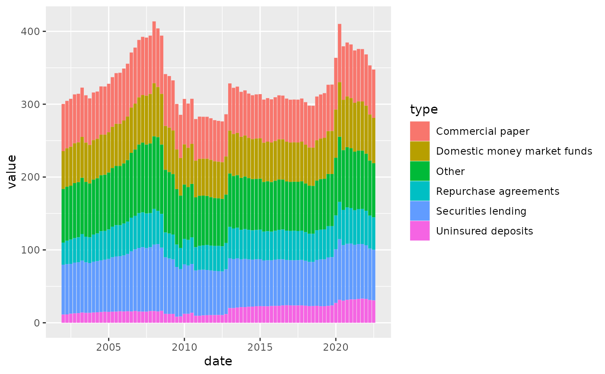

By default, legends of bar plots and area plots use the draw_key_polygon function
to draw a rectangle as high as the text height. fedplot instead uses square legends, achieved by passing the argument key_glyph=draw_key_square
to the required geometries (geom_col, etc.).
See this stack overflow thread for more details,
and this page for examples of other legend key functions.
Usage
draw_key_square(data, params, size)
Arguments
- data
A single row data frame containing the scaled aesthetics to
display in this key
- params
A list of additional parameters supplied to the geom.
- size
Width and height of key in mm.
Examples
library(ggplot2)
p <- ggplot(FSR_4_1, aes(date, value, fill=type))
# key glyphs can be specified by their name
p + geom_col(key_glyph = "square")

# key glyphs can be specified via their drawing function
p + geom_col(key_glyph = draw_key_square)